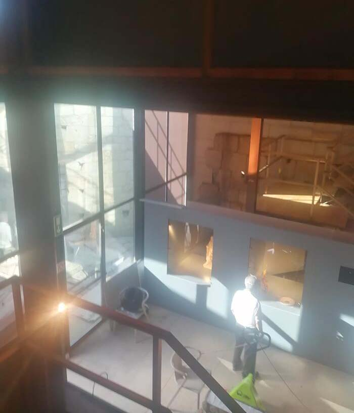
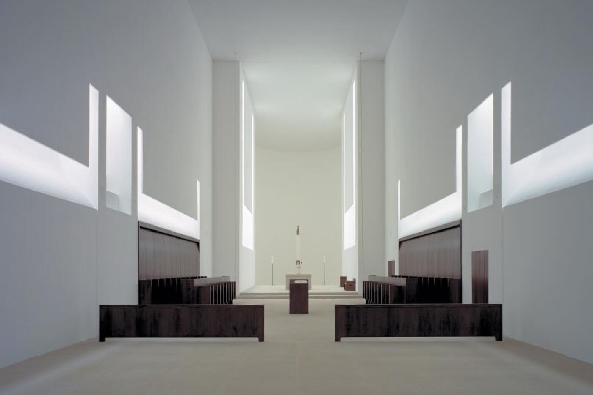
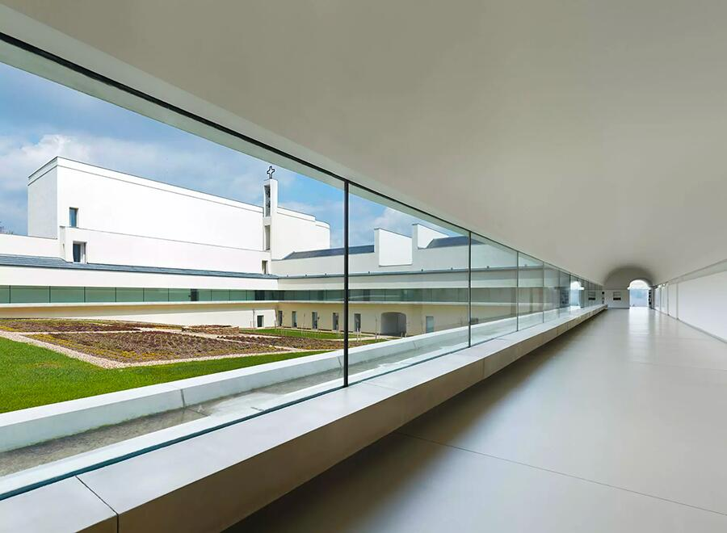
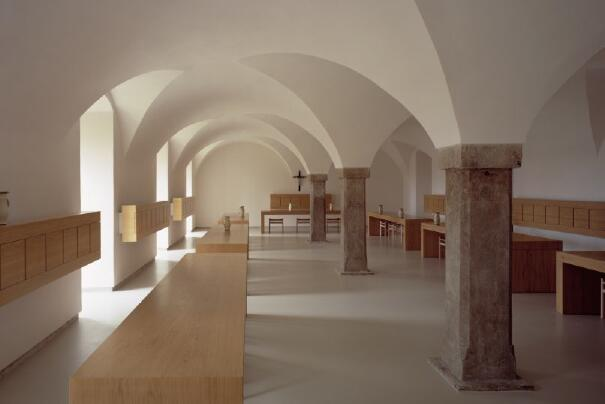
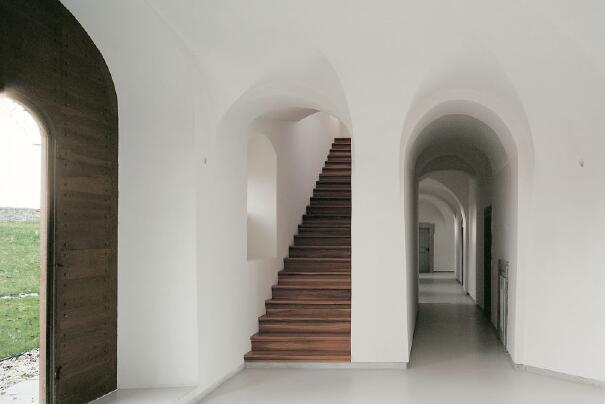
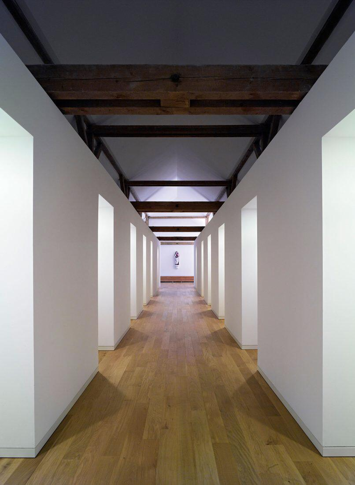
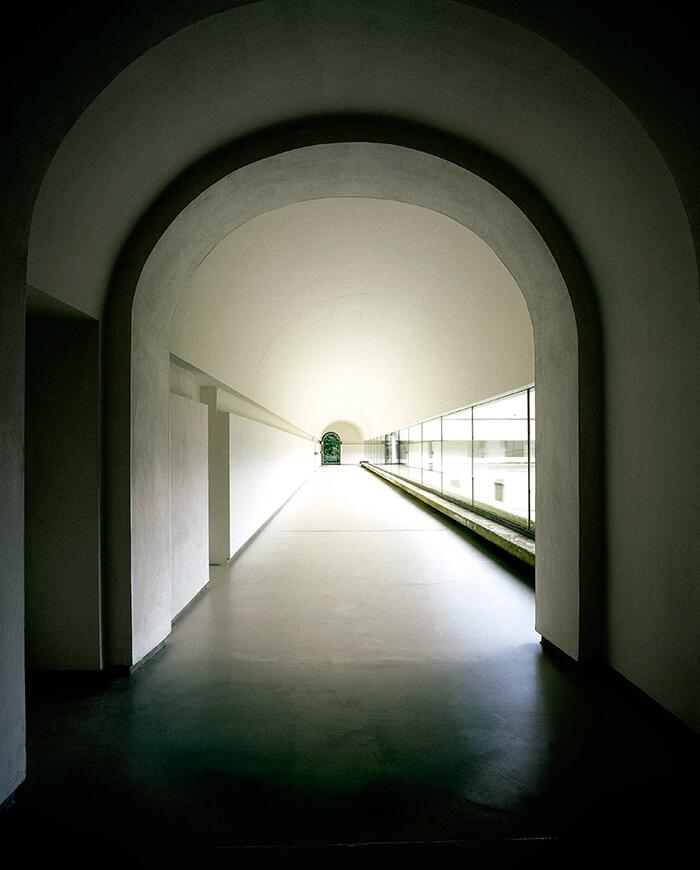
Il monastero di Nový Dvůr rappresenta uno dei punti più alti della ricerca di Pawson sulla densità come qualità percettiva. Qui la massa è ridotta all’osso, ma proprio questa sottrazione genera una presenza intensa, quasi fisica. Il vuoto non è assenza, bensì un materiale attivo: il suo spessore, la sua temperatura luminosa, il modo in cui preme sul corpo definiscono l’esperienza più della muratura stessa.
Le superfici bianche, opache, non riflettenti, costruiscono un’atmosfera sospesa, priva di dettagli che possano distrarre. La luce entra filtrata, mai diretta, come un pulviscolo uniforme che modella lentamente gli spigoli e addensa o alleggerisce l’aria a seconda dell’ora del giorno. Il risultato è uno spazio che non si percepisce attraverso la forma, ma attraverso la qualità della sua intensità.
Gli ambienti monastici — chiesa, chiostro, refettorio — sono composti con una grammatica severa: proporzioni elementari, angoli netti, assi controllati. Ma ciò che realmente struttura il percorso non è la geometria: è il variare impercettibile della luce, che regola la densità dell’esperienza come un respiro lento. La materia stessa del monastero sembra oscillare tra presenza e dissoluzione, tra peso e silenzio.
Nový Dvůr Monastery mostra come l’architettura possa costruire densità non accumulando oggetti, ma calibrando vuoti. La pressione percettiva nasce dall’equilibrio tra ciò che è detto e ciò che è trattenuto, tra superficie e luce, tra massa e quiete. Pawson non cerca minimalismo come stile, ma come condizione atmosferica: un campo essenziale in cui ogni variazione di tono produce una trasformazione profonda dell’esperienza.
È un esempio paradigmatico per il nostro itinerario didattico: uno spazio in cui la densità non deriva dall’ingombro, ma dal modo in cui il vuoto costruisce un mondo sensibile, disciplinato e intensamente presente.
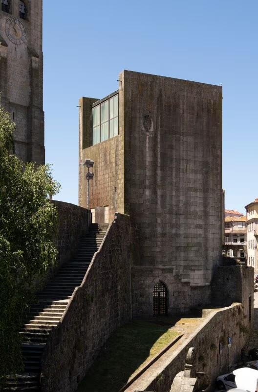
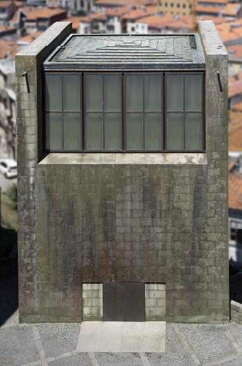
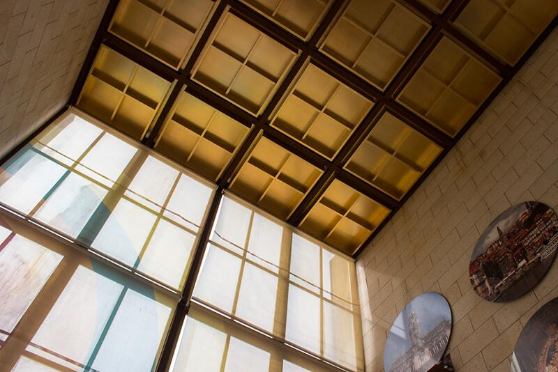
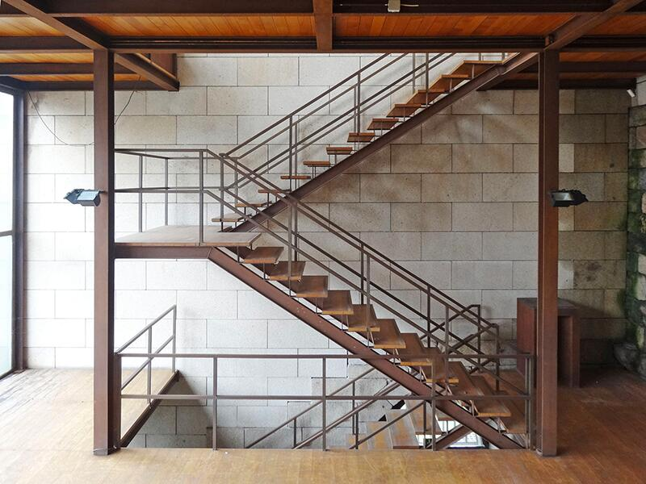
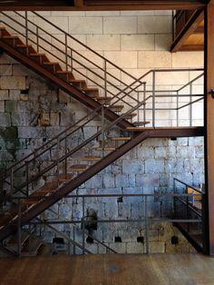
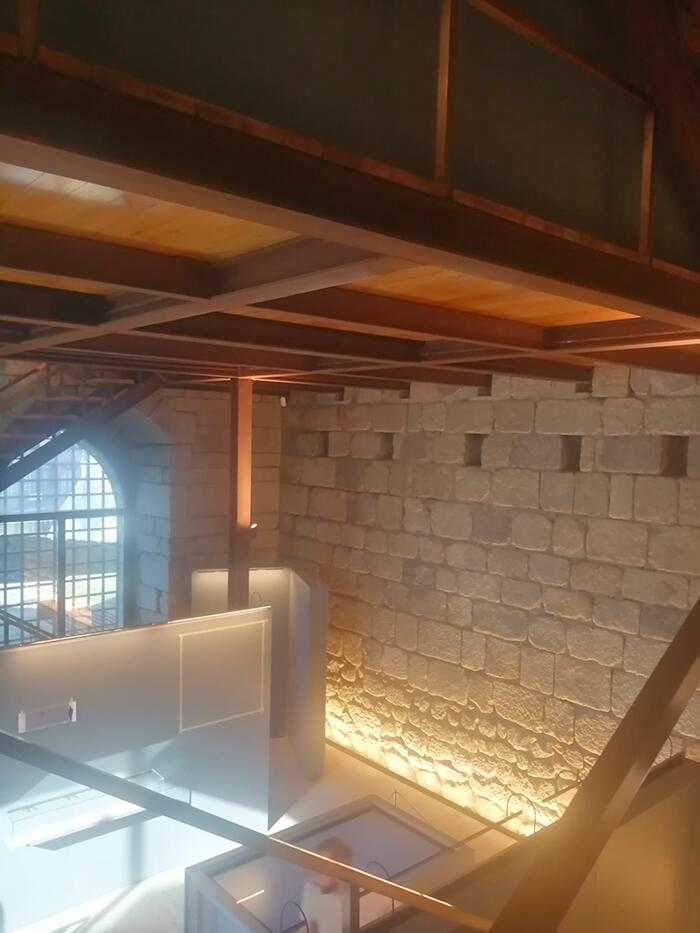
Nella Casa dos 24, Fernando Távora mette in atto un’intelligenza progettuale che lega spazio, materia e memoria collettiva in un unico organismo compatto. Qui la densità non è semplice accumulo di massa, ma un modo di orientare la percezione attraverso la calibrata relazione tra pieni e vuoti, tra superfici ruvide e tagli di luce, tra spessori murari e interstizi domestici.
L’uso della pietra locale, delle travature lignee e degli spessori strutturali non ha un valore decorativo: costruisce un ambiente gravido di presenza, in cui le pareti sembrano trattenere il tempo e restituirlo come atmosfera. La densità materica non produce pesantezza, ma un campo stabile, solido, affidabile — una qualità fondamentale in un edificio che rielabora la tradizione civica portoghese con una sensibilità moderna.
All’interno, il vuoto è sempre misurato: mai dilatato, mai compresso in modo eccessivo. Ogni ambiente è calibrato per far dialogare luce e massa, permettendo alla luce naturale di insinuarsi negli spessori e valorizzarne la rugosità. Questa dialettica genera una percezione tattile dello spazio: si “sente” il peso delle pareti, la profondità delle nicchie, la risonanza del legno. La densità diventa così un’esperienza corporea, non un mero dato costruttivo.
La logica distributiva sottolinea ulteriormente questa qualità. Percorrere la Casa dos 24 significa attraversare una sequenza di compressioni e aperture calibrate, in cui il vuoto è un materiale tanto importante quanto la pietra. L’architettura non esibisce monumentalità: la densità nasce dalla capacità di stratificare significato negli spessori e nelle superfici, facendo emergere un’identità forte ma non autoritaria.
In sintesi: Távora mostra che la densità dello spazio è una costruzione percettiva e culturale, non una questione di volumi. È la relazione tra materia, luce e vuoto a rendere l’architettura viva, intensa e radicata.
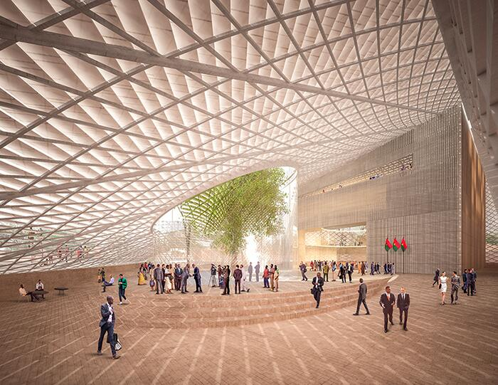
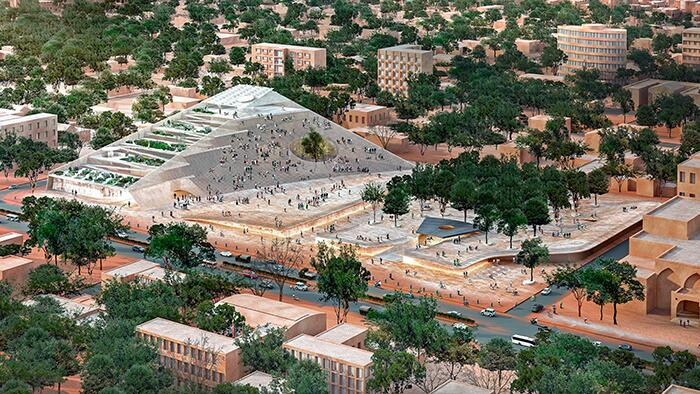
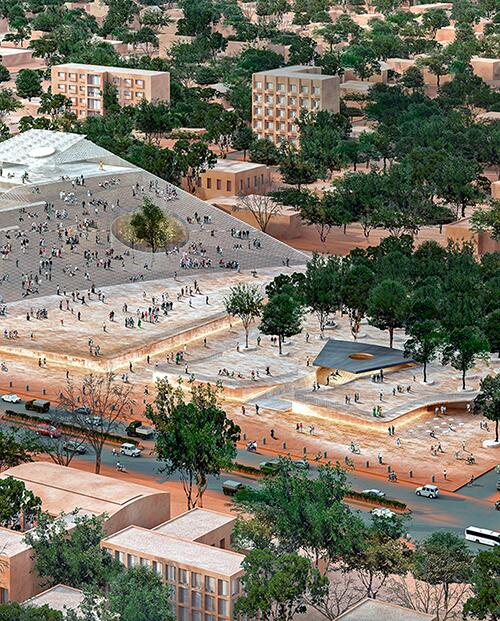
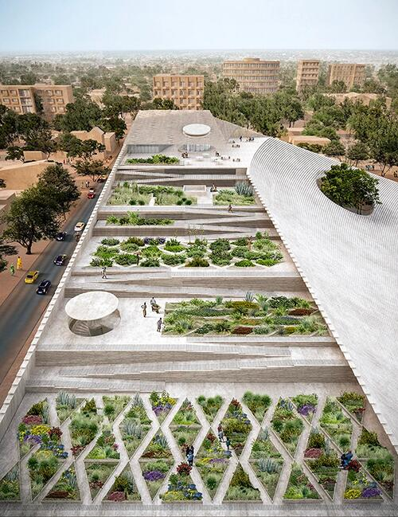
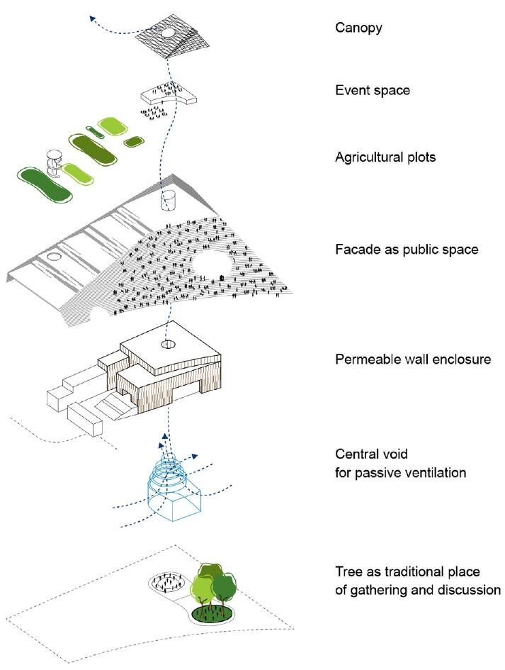
La densità come forma civica e climatica
Nel progetto per il Burkina Faso National Assembly, Francis Kéré reinterpreta la nozione di densità come un intreccio di massa, clima e partecipazione civica. L'edificio, concepito come un grande volume stratificato di terrazze, camere d’aria e pareti filtranti, non cerca la monumentalità attraverso la pesantezza, ma attraverso la presenza atmosferica: la densità diventa una qualità percepita prima ancora che costruita.
La massa non è mai opaca o compatta: funziona come un dispositivo climatico che assorbe e restituisce il calore, filtra la luce, genera ombra profonda. Gli spessori in terra stabilizzata lavorano come accumulatori termici e, insieme alle aperture calibrate, creano un campo di micro-differenze di temperatura e luminosità. Lo spazio non è uniforme: è un ecosistema in cui il corpo percepisce gradienti, pressioni, vuoti e protezioni.
La grande scala civica dell’edificio è bilanciata da una porosità attentamente modulata. Le logge, le rampe, le terrazze accessibili trasformano il parlamento in un luogo attraversabile, dove la collettività può sostare, osservare, partecipare. La densità, qui, non schiaccia: invita. È una massa che si apre, che respira, che costruisce comunità attraverso la qualità dell’ombra e la generosità del vuoto. Kéré dimostra che la densità non è un ostacolo ma una risorsa percettiva: un modo per radicare l’edificio nel suo clima, nella sua cultura, nella sua terra. Le superfici grezze, il ritmo delle bucature, il comportamento termico del materiale creano un ambiente in cui lo spazio sembra spesso, “pieno”, ma al tempo stesso permeabile. La densità diventa il mezzo attraverso il quale l’architettura assume un ruolo etico e sociale.
Per questo il progetto è fondamentale per il nostro percorso: rivela come la densità sia un atto politico e ambientale, un modo di costruire identità collettiva attraverso materia, luce e vuoto.